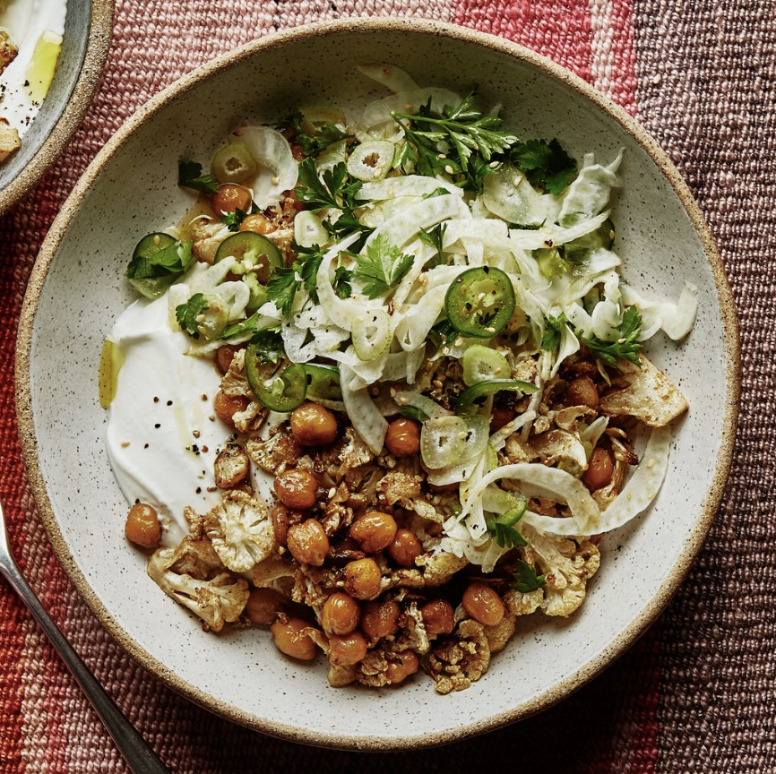

Chickpea Bowls

Description
This is a tasty and nutritious meal that is worth the chopping and slicing! It's worth getting the nice chickpeas in a jar for this recipe, though they sometimes take longer to get as crispy in the oven.
Feel free to swap out the fennel for something else like cabbage, though we think the fennel provides the perfect amount of crunch along with the subtle aniseed flavour. Sliced thinly like this, the flavour of the fennel isn't overpowering and is balanced nicely by the spiced chickpeas, freshness of the parsley and tang of the garlicky yoghurt. Enjoy!
Ingredients
- 1½t coriander
- 1½t cumin
- 1T toasted sesame seeds
- ¾C yogurt (unsweetened)
- 4T lemon juice
- 1 medium fennel bulb
- 1 small chile
- 1 C parsley
- ½ head cauliflower
- 1 can or jar of chickpeas, rinsed
- 1 garlic clove, grated
- 3T Oil (Olive, extra-virgin)
- Kosher salt
- freshly ground pepper
Steps
- Preheat oven to 200 degrees.
- Cut cauliflower into florets and coat, along with the chickpeas, with the oil, garlic, cumin and coriander.
- Roast cauliflower and chickpeas in the oven until crispy, around 20 minutes. Toss halfway through.
While the cauliflower and chickpeas roast, make the yoghurt. Stir 1/4 of the lemon juice and a pinch of salt into the yoghurt. Set aside
- Halve the fennel and use a mandoline to slice very thinly.
- Roughly chop the parsley and finely slice the chile.
- Toss the fennel, chile, parsley, sesame seeds and remaining lemon juice together.
- When the cauliflower and chickpeas are done, remove from the oven. Spoon the yoghurt into the base of each bowl or plate, top with the roasted cauliflower and chickpeas and finally the fennel salad.
- Drizzle with olive oil if you like.
Home